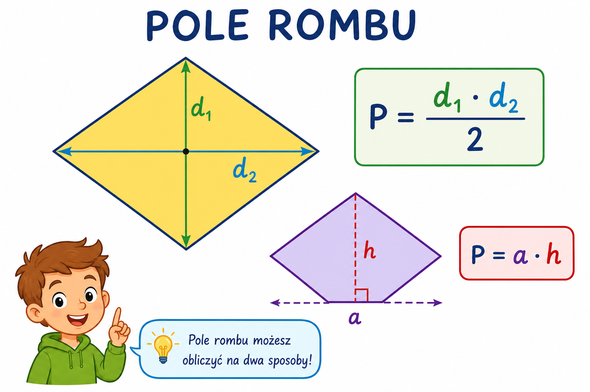

Co to jest? Що це?
Pole rombu: podstawa × wysokość albo połowa iloczynu przekątnych.
Площа ромба: основа × висота або половина добутку діагоналей.
Jak w szkole? Як у школі?
P = a·h. Albo P = (d₁·d₂)/2 — gdy znasz przekątne.
P = a·h. Або P = (d₁·d₂)/2 — коли знаєш діагоналі.
Przykład z życia Приклад з життя
Działka w arach; romb i trapez. Przykład: P = a·h lub (d₁·d₂)/2.
Ділянка в арах; ромб і трапеція. Приклад: P = a·h lub (d₁·d₂)/2.
P = a·h lub (d₁·d₂)/2